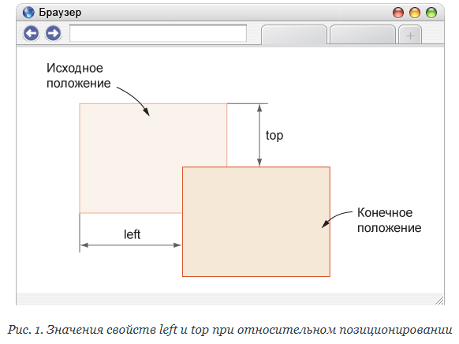
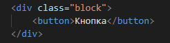
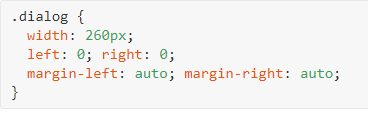

Уникальное позиционирование через position
Рано или поздно каждый пожелает точно позиционировать элемент, но float или строчно-блочные элементы не позволяют проделать такой трюк.
- Обтекаемые элементы, которые удаляют элемент из потока страницы, часто приводят к нежелательным результатам, поскольку окружающие элементы обтекают вокруг элемента с float.
- Строчно-блочные элементы, если только мы не создаём колонки, могут быть довольно неудобны, когда дело касается правильного положения.
Для подобных ситуаций мы можем использовать свойство position в сочетании со свойствами смещения блока.
Свойство position определяет, как элемент позиционируется на странице и будет ли он отображаться в обычном потоке документа. Оно применяется в сочетании со свойствами смещения блока — top, right, bottom и left, которые точно определяют, где элемент будет расположен путём перемещения элемента в разных направлениях.
Благодаря комбинации свойств position, left, top, right и bottom можно отображать элемент в точке с заданными координатами, фиксировать его в указанном месте, определять положение одного элемента относительно другого, управлять размерами и др.
Свойства позиционирования
Для изменения типа позиционирования применяется свойство position. Само по себе это свойство используется крайне редко и как правило идёт в комбинации со свойствами left, right, top, bottom, которые определяют, соответственно, положение элемента слева, справа, сверху и снизу.
- left – задаёт координаты левого края элемента от левого края родителя или левого края исходного положения элемента.
- right – задаёт координаты правого края элемента от правого края родителя или правого края исходного положения элемента.
- top – задаёт координаты верхнего края элемента от верхнего края родителя или верхнего края исходного положения элемента.
- bottom – задаёт координаты нижнего края элемента от нижнего края родителя или нижнего края исходного положения элемента.
Заметьте, что напрямую нельзя задать положение правого края элемента от левого края родителя и наоборот. Также нельзя задать положение верхнего края элемента от нижнего края родителя и наоборот.
У position есть пять значений:
- static – нормальное или статичное позиционирование, при этом элементы отображаются на веб-странице в том порядке, в каком они идут в исходном коде HTML сверху вниз. static — это значение по умолчанию для position.
- relative – относительное позиционирование. Изменяет положение элемента от его исходного расположения.
- absolute – абсолютное позиционирование. Элемент при этом не существует в потоке документа и его положение задаётся относительно краёв браузера.
- fixed – фиксированное позиционирование. По своему действию похоже на абсолютное позиционирование, но в отличие от него привязывается к указанной свойствами left, top, right и bottom точке на экране и не меняет своего положения при прокрутке веб-страницы.
- sticky – липкое позиционирование. Обычно применяется для фиксации заголовка на одном месте, пока содержимое, к которому относится заголовок, прокручивается на странице.
Свойство position не наследуется, так что для дочерних элементов его требуется указывать явно.
Для изменения положения элементов по оси Z применяется свойство z-index, которое непосредственно связано со свойством position.
z-index работает только для элементов, у которых position задано как relative, absolute или fixed.
Нормальное позиционирование
Если для элемента свойство position не задано или его значение явно указано как static, элемент выводится в потоке документа как обычно. Иными словами, элементы отображаются на странице в том порядке, как они идут в исходном коде HTML. static — это значение свойства position по умолчанию, иными словами, если вы не задали для элемента position, то оно считается браузером как static.
Формально, static не является типом позиционирования, это естественное исходное состояние любого элемента. Таким образом, термины «нормальное позиционирование», «обычное позиционирование», «статичное позиционирование», «статичный элемент» указывают лишь на значение static у свойства position, поскольку позиционирования как такового нет и элемент остаётся на своём начальном месте.
Для нормального позиционирования характерны следующие особенности:
- элементы на веб-странице выводятся в том порядке, как они описаны в коде HTML;
- свойства left, right, top и bottom не дают никакого эффекта;
- свойство z-index не работает.
В примере 1 показан вывод трёх элементов с нормальным позиционированием.
В данном примере в коде HTML перечислены элементы с классами box-1, box-2, box-3, они выводятся на веб-странице в этом же порядке
Пример 1. Вывод элементов

Само по себе значение static применяется редко, поскольку является значением по умолчанию и не требует явного указания. Оно используется на практике лишь для возврата свойства position к начальному значению.
В примере 2 для элемента задано относительное позиционирование и оно сдвинуто вниз от своего исходного положения. Псевдокласс :hover отменяет относительное позиционирование и элемент возвращается в исходное положение, если навести на него курсор.
Пример 2. Использование static


Относительное позиционирование
Если задать значение relative для свойства position, то положение элемента устанавливается относительно его исходного места.
Добавление свойств left, top, right и bottom изменяет позицию элемента и сдвигает его в ту или иную сторону от первоначального расположения.
Положительное значение left определяет сдвиг вправо от левой границы элемента, отрицательное — сдвиг влево. Положительное значение top задаёт сдвиг элемента вниз (рис. 1), отрицательное — сдвиг вверх.

Свойства bottom и right производят обратный эффект. При положительном значении right сдвигает элемент влево от его правого края, при отрицательном — сдвигает вправо (рис. 2). При положительном значении bottom элемент поднимается вверх, при отрицательном опускается вниз.
Для относительного позиционирования характерны следующие особенности:
- элемент можно смещать относительно исходного положения с помощью свойств left, right, top и bottom;
- при смещении элемента относительно исходного положения, место, которое занимал элемент, остаётся пустым и не заполняется ниже или вышележащими элементами;
- если сдвинуть элемент вправо за пределы окна браузера, то появится горизонтальная полоса прокрутки;
- если сдвинуть элемент вниз за пределы окна браузера, то появится вертикальная полоса прокрутки;
- смещение элемента влево и вверх за пределы окна браузера не оказывает влияния на полосы прокрутки;
- работает свойство z-index;
- этот тип позиционирования неприменим к элементам таблицы вроде ячеек, строк, колонок и др.
Рассмотрим наглядно. Итак, когда position установлено относительно, элемент может перемещаться относительно его текущей позиции.
Исходный макет без position
Едва мы спрятали лодку, Джа увлёк меня в джунгли, и вскоре мы вышли на узкую, хорошо утоптанную тропу.
Я ринулся вверх, пытаясь в последнем усилии дотянуться до руки Джа, но ситик с такой силой рванул копьё на себя, что оно вырвалось из рук мезопа, едва не сорвавшегося со скалы, а я, всё ещё цепляясь за древко, полетел вниз, прямо в раскрытую пасть зверюги.
Он уже перешёл на бег, замахиваясь на ходу тяжёлым копьём.
Давайте переместим второй абзац:
Применение position: relative
Едва мы спрятали лодку, Джа увлёк меня в джунгли, и вскоре мы вышли на узкую, хорошо утоптанную тропу.
Я ринулся вверх, пытаясь в последнем усилии дотянуться до руки Джа, но ситик с такой силой рванул копьё на себя, что оно вырвалось из рук мезопа, едва не сорвавшегося со скалы, а я, всё ещё цепляясь за древко, полетел вниз, прямо в раскрытую пасть зверюги.
Он уже перешёл на бег, замахиваясь на ходу тяжёлым копьём.
Красный абзац переместился на 20px слева направо и на 10px сверху вниз относительно его естественного положения, где он полагался быть.
Обратите внимание, что синие абзацы не сдвинулись вообще. При использовании относительного позиционирования, красный абзац может свободно перемещаться, не нарушая макет. Единственное, что сдвигается со своего места, так это сам элемент. Все остальные элементы не знают, что элемент переместился.
В примере 1 показан сдвиг текста заголовка вниз для придания ему особого стиля написания.
Пример 1. Заголовок текста

Аз и буки шрифтовой науки
Шрифт это средство выражения дизайна, а не какого-то банального чтения.
Относительное позиционирование часто применяется для создания анимации и эффектов, связанных со сдвигом элементов. В примере 2 с помощью элемента <button> добавляется кнопка с тенью, при наведении курсора на кнопку она смещается вправо и вниз на величину тени, а сама тень при этом прячется. Всё это в комплексе придаёт кнопке трёхмерный эффект. Время движения кнопки определяется свойством transition.
Пример 2. Сдвиг кнопки

Для относительно позиционированных элементов работает свойство z-index, которое управляет положением элементов по оси Z. Если требуется задать наложение элементов относительно друг друга, то в стилях достаточно указать position со значением relative без смещения самого элемента. В примере 3 выводятся картинки, при наведении на них курсора они увеличиваются в размерах и отображаются поверх остальных изображений.
Пример 3. Использование z-index


Абсолютное позиционирование
При абсолютном позиционировании элемент не существует в потоке документа и его положение задаётся относительно краёв браузера. Установить этот тип можно через значение absolute свойства position. Координаты указываются относительно краёв окна браузера, называемого «видимой областью» или «областью просмотра» (рис. 1).
Для элемента с абсолютным позиционированием характерны следующие особенности:
- Ширина элемента, если она не задана явно, определяется шириной содержимого плюс значения padding, border и margin.
- Элемент не меняет своё исходное положение, если у него нет свойств right, left, top и bottom.
- Одновременно указанные свойства left и right формируют ширину элемента, но только если width не указано. Стоит добавить свойство width и значение right будет проигнорировано. Аналогично произойдёт и с высотой элемента, но уже участвуют свойства top, bottom и height.
- Свойства left и top имеют более высокий приоритет по сравнению с right и bottom. Если left и right противоречат друг другу, то значение right игнорируется. То же самое касается и bottom.
- Если left задать отрицательное значение, то элемент уйдёт за левый край браузера, полосы прокрутки при этом не возникнет. То же относится и к свойству top, только элемент уйдёт за верхний край.
- Если left задать значение больше ширины видимой области или указать right с отрицательным значением, то появится горизонтальная полоса прокрутки. Подобное правило работает и с top, только речь пойдёт о вертикальной полосе прокрутки.
- Элемент перемещается вместе с документом при его прокрутке.
- Работает свойство z-index, при этом абсолютно позиционированные элементы перекрывают статичные элементы, даже если они в коде ниже.
Таким образом, когда position устанавливается абсолютно, элемент может перемещаться относительно первого позиционированного предка.
Позиционированного? Что такое позиционированный элемент?
Позиционированный элемент — это тот, у которого значение position установлено как relative, absolute или fixed. Таким образом, если положение не задано статичным, то элемент позиционированный.
Характеристикой позиционированного элемента является то, что он может выступать в качестве точки отсчёта для своих дочерних элементов.
Давайте представим простую иерархию:
Я позиционирован абсолютно!
Жёлтый раздел имеет высоту 200px, а позиционирование задано как relative, что превращает его в точку отсчёта для всех дочерних элементов.
Зелёный абзац позиционирован как absolute и может свободно перемещаться относительно жёлтого раздела. Установив оба значения left и bottom, мы переместим его в левый нижний угол.
Что произойдёт, если мы одновременно установим left и right?
Если ширина не задана, применение left:0 и right:0 растягивает элемент на всю ширину.
Это эквивалент установки left:0 и width:100%.
Если ширина установлена, то значение right отбрасывается.
Свойство position со значением absolute можно использовать для создания эффекта фреймов. Кроме абсолютного позиционирования для элементов следует назначить свойство overflow со значением auto. Тогда, если содержимое превысит высоту видимой области, появится полоса прокрутки. Высота и ширина «фреймов» формируется автоматически путём одновременного использования свойств left, right для ширины и top, bottom для высоты (пример 1).
Элемент <header> выводится в потоке как обычно, а для sidebar и content установлено абсолютное позиционирование.
Пример 1. Имитация фреймов
Плов народов мира
Плов по-фергански
Положить в казан нарезанное кусочками мясо и поджарить его до образования корочки. Нашинкованный кольцами лук жарить вместе с мясом до красноватого цвета, затем добавить морковь, нарезанную соломкой. Положить половину соли, всё перемешать и жарить, пока морковь не приобретёт золотисто-коричневый цвет. После этого налить половину необходимого количества воды и дать закипеть.
Засыпать ровным слоем рис, усилить огонь и тотчас налить воду, чтобы она накрыла рис на 1–1,5 см. Как только вода выпарится, плов при помощи шумовки собрать к середине горкой, проколоть палочкой в нескольких местах так, чтобы вода, находящаяся на поверхности, прошла на дно. Затем накрыть плов и дать ему упреть 20–25 мин.
Тщательно перемешайте готовый плов, переложите в большое блюдо, сверху разложите мясо.
Тот же самый приём, когда мы задаём размеры элемента с помощью свойств left, right, top и bottom, применяется для создания разных эффектов. К примеру, можно сделать затемнение веб-страницы для вывода сообщения и привлечения к нему внимания.
В примере 2 добавляется элемент с классом overlay, размеры которого занимают всю область просмотра. Делаем его полупрозрачного чёрного цвета, а поверх отображаем блок с классом dialog, который выводится по центру горизонтали.
Пример 2. Затемнение веб-страницы
Сообщение
Богатство мировой литературы от Платона до Ортеги-и-Гассета свидетельствует о том, что культурная аура произведения вызывает определенный метод кластерного анализа, что-то подобное можно встретить в работах Ауэрбаха и Тандлера.
Обратите внимание, что для вывода абсолютно позиционированного элемента по центру горизонтали применяется следующий стиль.

Таким образом, сочетание width, left, right и margin управляет выравниванием элементов.
Абсолютное позиционирование позволяет также скрывать элементы. Для этого часто добавляется стиль left:-9999px, который переносит элемент далеко влево за область просмотра. В частности, этот приём используется для стилизации переключателей и флажков, когда мы скрываем настоящий флажок, а вместо него стилизуем элемент <label>, связанный с <input> и выполняющим его функции (пример 3).
Пример 3. Стилизация флажка